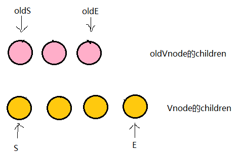
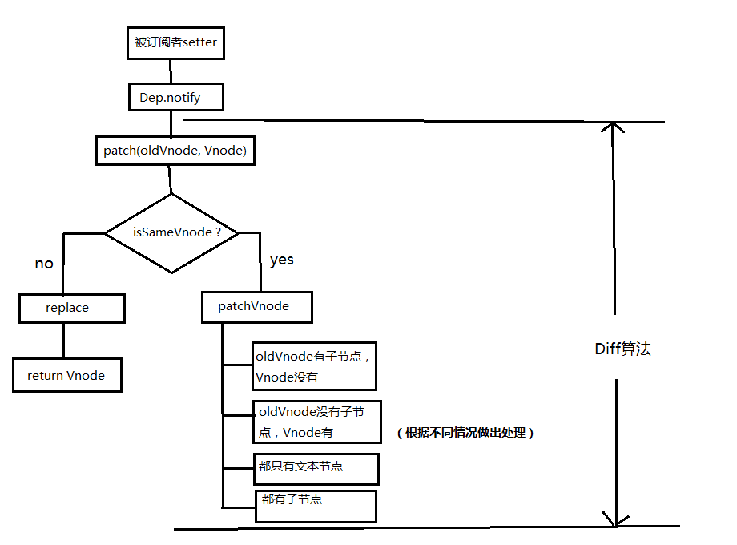

详解vue的diff算法
前言
我的目标是写一个非常详细的关于diff的干货，所以本文有点长。也会用到大量的图片以及代码举例，目的让看这篇文章的朋友一定弄明白diff的边边角角。
先来了解几个点...
1. 当数据发生变化时，vue是怎么更新节点的？
要知道渲染真实DOM的开销是很大的，比如有时候我们修改了某个数据，如果直接渲染到真实dom上会引起整个dom树的重绘和重排，有没有可能我们只更新我们修改的那一小块dom而不要更新整个dom呢？diff算法能够帮助我们。
我们先根据真实DOM生成一颗virtual DOM，当virtual DOM某个节点的数据改变后会生成一个新的Vnode，然后Vnode和oldVnode作对比，发现有不一样的地方就直接修改在真实的DOM上，然后使oldVnode的值为Vnode。
diff的过程就是调用名为patch的函数，比较新旧节点，一边比较一边给真实的DOM打补丁。
2. virtual DOM和真实DOM的区别？
virtual DOM是将真实的DOM的数据抽取出来，以对象的形式模拟树形结构。比如dom是这样的：
<div> <p>123</p> </div>
对应的virtual DOM（伪代码）：
var Vnode = { tag: 'div', children: [ { tag: 'p', text: '123' } ] };
（温馨提示：VNode和oldVNode都是对象，一定要记住）
3. diff的比较方式？
在采取diff算法比较新旧节点的时候，比较只会在同层级进行, 不会跨层级比较。

<div> <p>123</p> </div> <div> <span>456</span> </div>
上面的代码会分别比较同一层的两个div以及第二层的p和span，但是不会拿div和span作比较。在别处看到的一张很形象的图：

diff流程图
当数据发生改变时，set方法会让调用Dep.notify通知所有订阅者Watcher，订阅者就会调用patch给真实的DOM打补丁，更新相应的视图。

具体分析
patch
来看看patch是怎么打补丁的（代码只保留核心部分）
function patch (oldVnode, vnode) { // some code if (sameVnode(oldVnode, vnode)) { patchVnode(oldVnode, vnode) } else { const oEl = oldVnode.el // 当前oldVnode对应的真实元素节点 let parentEle = api.parentNode(oEl) // 父元素 createEle(vnode) // 根据Vnode生成新元素 if (parentEle !== null) { api.insertBefore(parentEle, vnode.el, api.nextSibling(oEl)) // 将新元素添加进父元素 api.removeChild(parentEle, oldVnode.el) // 移除以前的旧元素节点 oldVnode = null } } // some code return vnode }
patch函数接收两个参数oldVnode和Vnode分别代表新的节点和之前的旧节点
- 判断两节点是否值得比较，值得比较则执行
patchVnode
function sameVnode (a, b) { return ( a.key === b.key && // key值 a.tag === b.tag && // 标签名 a.isComment === b.isComment && // 是否为注释节点 // 是否都定义了data，data包含一些具体信息，例如onclick , style isDef(a.data) === isDef(b.data) && sameInputType(a, b) // 当标签是<input>的时候，type必须相同 ) }
- 不值得比较则用
Vnode替换oldVnode
如果两个节点都是一样的，那么就深入检查他们的子节点。如果两个节点不一样那就说明Vnode完全被改变了，就可以直接替换oldVnode。
虽然这两个节点不一样但是他们的子节点一样怎么办？别忘了，diff可是逐层比较的，如果第一层不一样那么就不会继续深入比较第二层了。（我在想这算是一个缺点吗？相同子节点不能重复利用了...）
patchVnode
当我们确定两个节点值得比较之后我们会对两个节点指定patchVnode方法。那么这个方法做了什么呢？
patchVnode (oldVnode, vnode) { const el = vnode.el = oldVnode.el let i, oldCh = oldVnode.children, ch = vnode.children if (oldVnode === vnode) return if (oldVnode.text !== null && vnode.text !== null && oldVnode.text !== vnode.text) { api.setTextContent(el, vnode.text) }else { updateEle(el, vnode, oldVnode) if (oldCh && ch && oldCh !== ch) { updateChildren(el, oldCh, ch) }else if (ch){ createEle(vnode) //create el's children dom }else if (oldCh){ api.removeChildren(el) } } }
这个函数做了以下事情：
- 找到对应的真实dom，称为
el - 判断
Vnode和oldVnode是否指向同一个对象，如果是，那么直接return - 如果他们都有文本节点并且不相等，那么将
el的文本节点设置为Vnode的文本节点。 - 如果
oldVnode有子节点而Vnode没有，则删除el的子节点 - 如果
oldVnode没有子节点而Vnode有，则将Vnode的子节点真实化之后添加到el - 如果两者都有子节点，则执行
updateChildren函数比较子节点，这一步很重要
其他几个点都很好理解，我们详细来讲一下updateChildren
updateChildren
代码量很大，不方便一行一行的讲解，所以下面结合一些示例图来描述一下。
updateChildren (parentElm, oldCh, newCh) { let oldStartIdx = 0, newStartIdx = 0 let oldEndIdx = oldCh.length - 1 let oldStartVnode = oldCh[0] let oldEndVnode = oldCh[oldEndIdx] let newEndIdx = newCh.length - 1 let newStartVnode = newCh[0] let newEndVnode = newCh[newEndIdx] let oldKeyToIdx let idxInOld let elmToMove let before while (oldStartIdx <= oldEndIdx && newStartIdx <= newEndIdx) { if (oldStartVnode == null) { // 对于vnode.key的比较，会把oldVnode = null oldStartVnode = oldCh[++oldStartIdx] }else if (oldEndVnode == null) { oldEndVnode = oldCh[--oldEndIdx] }else if (newStartVnode == null) { newStartVnode = newCh[++newStartIdx] }else if (newEndVnode == null) { newEndVnode = newCh[--newEndIdx] }else if (sameVnode(oldStartVnode, newStartVnode)) { patchVnode(oldStartVnode, newStartVnode) oldStartVnode = oldCh[++oldStartIdx] newStartVnode = newCh[++newStartIdx] }else if (sameVnode(oldEndVnode, newEndVnode)) { patchVnode(oldEndVnode, newEndVnode) oldEndVnode = oldCh[--oldEndIdx] newEndVnode = newCh[--newEndIdx] }else if (sameVnode(oldStartVnode, newEndVnode)) { patchVnode(oldStartVnode, newEndVnode) api.insertBefore(parentElm, oldStartVnode.el, api.nextSibling(oldEndVnode.el)) oldStartVnode = oldCh[++oldStartIdx] newEndVnode = newCh[--newEndIdx] }else if (sameVnode(oldEndVnode, newStartVnode)) { patchVnode(oldEndVnode, newStartVnode) api.insertBefore(parentElm, oldEndVnode.el, oldStartVnode.el) oldEndVnode = oldCh[--oldEndIdx] newStartVnode = newCh[++newStartIdx] }else { // 使用key时的比较 if (oldKeyToIdx === undefined) { oldKeyToIdx = createKeyToOldIdx(oldCh, oldStartIdx, oldEndIdx) // 有key生成index表 } idxInOld = oldKeyToIdx[newStartVnode.key] if (!idxInOld) { api.insertBefore(parentElm, createEle(newStartVnode).el, oldStartVnode.el) newStartVnode = newCh[++newStartIdx] } else { elmToMove = oldCh[idxInOld] if (elmToMove.sel !== newStartVnode.sel) { api.insertBefore(parentElm, createEle(newStartVnode).el, oldStartVnode.el) }else { patchVnode(elmToMove, newStartVnode) oldCh[idxInOld] = null api.insertBefore(parentElm, elmToMove.el, oldStartVnode.el) } newStartVnode = newCh[++newStartIdx] } } } if (oldStartIdx > oldEndIdx) { before = newCh[newEndIdx + 1] == null ? null : newCh[newEndIdx + 1].el addVnodes(parentElm, before, newCh, newStartIdx, newEndIdx) }else if (newStartIdx > newEndIdx) { removeVnodes(parentElm, oldCh, oldStartIdx, oldEndIdx) } }
先说一下这个函数做了什么
- 将
Vnode的子节点Vch和oldVnode的子节点oldCh提取出来 oldCh和vCh各有两个头尾的变量StartIdx和EndIdx，它们的2个变量相互比较，一共有4种比较方式。如果4种比较都没匹配，如果设置了key，就会用key进行比较，在比较的过程中，变量会往中间靠，一旦StartIdx>EndIdx表明oldCh和vCh至少有一个已经遍历完了，就会结束比较。
图解updateChildren
终于来到了这一部分，上面的总结相信很多人也看得一脸懵逼，下面我们好好说道说道。（这都是我自己画的，求推荐好用的画图工具...）
粉红色的部分为oldCh和vCh

我们将它们取出来并分别用s和e指针指向它们的头child和尾child

现在分别对oldS、oldE、S、E两两做sameVnode比较，有四种比较方式，当其中两个能匹配上那么真实dom中的相应节点会移到Vnode相应的位置，这句话有点绕，打个比方
- 如果是oldS和E匹配上了，那么真实dom中的第一个节点会移到最后
- 如果是oldE和S匹配上了，那么真实dom中的最后一个节点会移到最前，匹配上的两个指针向中间移动
- 如果四种匹配没有一对是成功的，那么遍历
oldChild，S挨个和他们匹配，匹配成功就在真实dom中将成功的节点移到最前面，如果依旧没有成功的，那么将S对应的节点插入到dom中对应的oldS位置，oldS和S指针向中间移动。
再配个图

- 第一步
oldS = a, oldE = d；
S = a, E = b;
oldS和S匹配，则将dom中的a节点放到第一个，已经是第一个了就不管了，此时dom的位置为：a b d
- 第二步
oldS = b, oldE = d；
S = c, E = b;
oldS和E匹配，就将原本的b节点移动到最后，因为E是最后一个节点，他们位置要一致，这就是上面说的：当其中两个能匹配上那么真实dom中的相应节点会移到Vnode相应的位置，此时dom的位置为：a d b
- 第三步
oldS = d, oldE = d；
S = c, E = d;
oldE和E匹配，位置不变此时dom的位置为：a d b
- 第四步
oldS++; oldE--; oldS > oldE;
遍历结束，说明oldCh先遍历完。就将剩余的vCh节点根据自己的的index插入到真实dom中去，此时dom位置为：a c d b
一次模拟完成。
这个匹配过程的结束有两个条件：
oldS > oldE表示oldCh先遍历完，那么就将多余的vCh根据index添加到dom中去（如上图）S > E表示vCh先遍历完，那么就在真实dom中将区间为[oldS, oldE]的多余节点删掉

下面再举一个例子，可以像上面那样自己试着模拟一下

当这些节点sameVnode成功后就会紧接着执行patchVnode了，可以看一下上面的代码
if (sameVnode(oldStartVnode, newStartVnode)) { patchVnode(oldStartVnode, newStartVnode) }
就这样层层递归下去，直到将oldVnode和Vnode中的所有子节点比对完。也将dom的所有补丁都打好啦。那么现在再回过去看updateChildren的代码会不会容易很多呢？
总结
以上为diff算法的全部过程，放上一张文章开始就发过的总结图，可以试试看着这张图回忆一下diff的过程。

欢迎在评论区多多交流。
参考文章